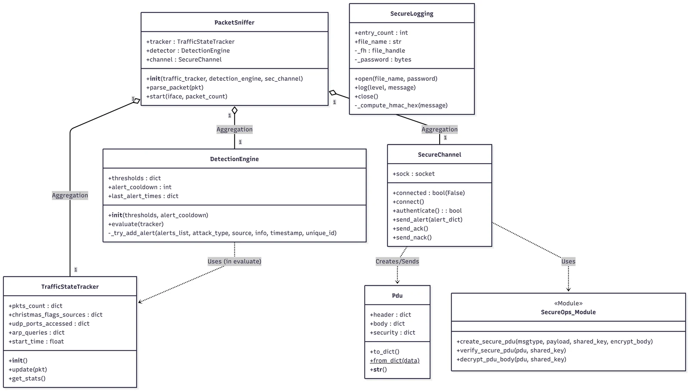
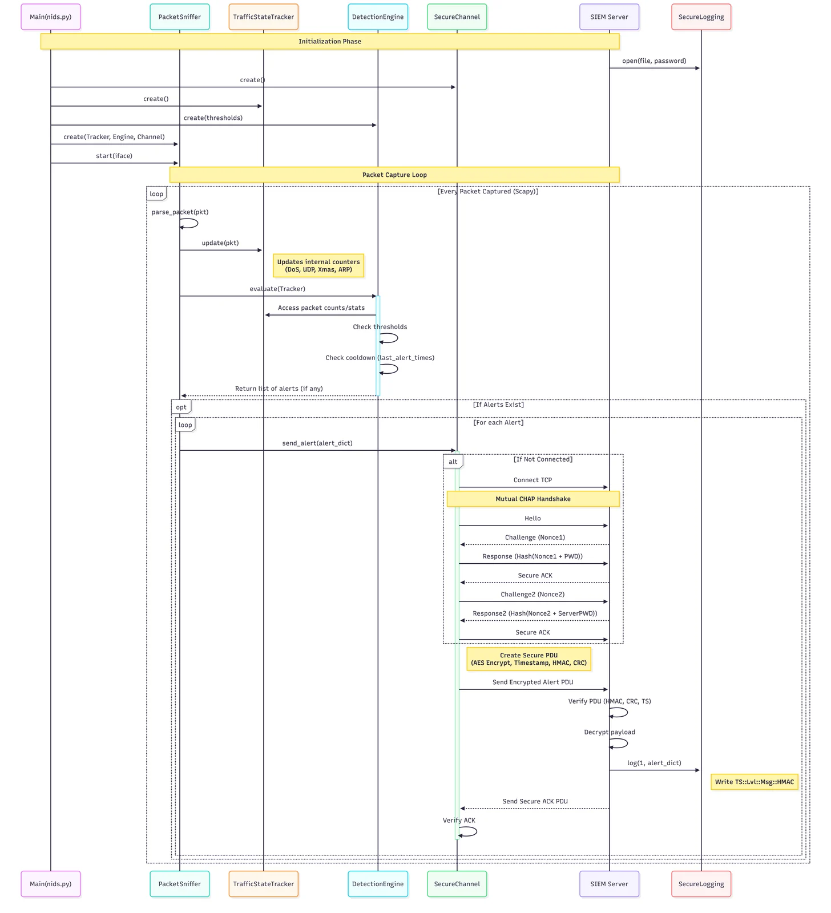
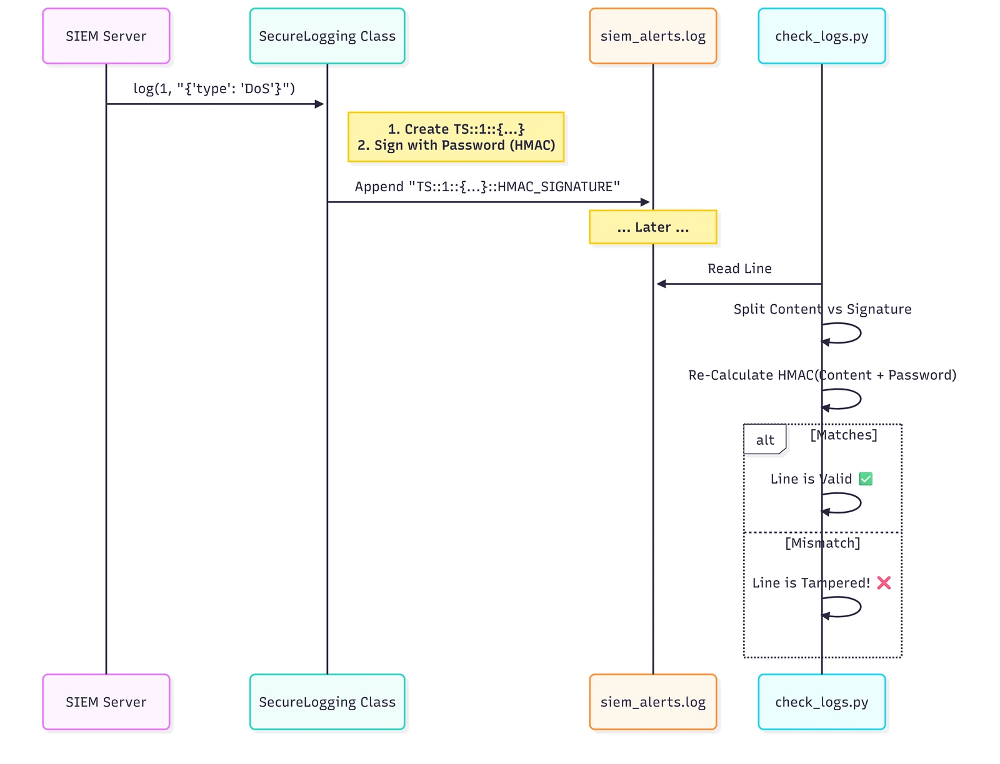

Sicurezza di rete · Python
Sistema di rilevamento delle intrusioni di rete
Un piccolo monitor di rete in Python che osserva il traffico, applica soglie di rilevamento e protegge i log di audit dalle manomissioni.
Panoramica
Ho realizzato un sistema didattico di rilevamento delle intrusioni di rete per analizzare il traffico e generare avvisi quando l’attività osservata superava determinate soglie. Il progetto esplora anche come proteggere l’integrità dei log prodotti dallo stesso strumento di monitoraggio.
Il progetto dimostra una pipeline e diversi meccanismi di sicurezza, ma non è un sostituto di un IDS di produzione mantenuto e aggiornato.
Il mio contributo
- Ho realizzato uno sniffer basato su Scapy e un componente per il tracciamento del traffico.
- Ho aggiunto il rilevamento basato su soglie e un intervallo di cooldown per limitare gli avvisi ripetuti.
- Ho implementato lo scambio CHAP reciproco del progetto e i controlli basati su AES-256, HMAC, CRC e timestamp.
- Ho protetto i record di log con HMAC e aggiunto un programma separato, `check_logs.py`, per verificarli.
Come funziona
Scapy acquisisce i pacchetti e il tracker aggiorna le misure di traffico usate dalle regole a soglia. Un cooldown limita le notifiche ripetute per la stessa condizione.
Il progetto dimostra inoltre uno scambio CHAP reciproco e usa AES-256, HMAC, CRC e timestamp nella progettazione delle comunicazioni e dei log. Lo strumento di verifica controlla se i dati protetti sono stati modificati.
Decisioni chiave
Rilevare l’attività prima di generare gli avvisi
Scelta: Tenere separati l’acquisizione dei pacchetti e il tracciamento del traffico dalla valutazione delle soglie.
Motivazione: Separare le fasi rende più semplice verificare e modificare la logica di rilevamento.
Compromesso: Le soglie sono statiche e non si adattano ai normali cambiamenti del comportamento della rete.
Rendere rilevabili le manomissioni dei log
Scelta: Autenticare i record con HMAC e fornire uno script di verifica.
Motivazione: Un avviso è meno utile se i record usati per analizzarlo possono essere modificati senza lasciare traccia.
Compromesso: Il prototipo usa una chiave hardcoded, inadatta a un ambiente operativo.
Risultati
Il prototipo integra l’osservazione dei pacchetti, regole a soglia e record di audit la cui integrità può essere verificata.
I diagrammi delle classi e delle sequenze documentano i componenti principali e le interazioni previste.
Limiti e sviluppi futuri
Le soglie statiche possono non rilevare attività che esulano dalle regole e possono generare falsi positivi. L’uso di una chiave hardcoded è un limite importante per un eventuale rilascio.
Come passo successivo, sposterei le chiavi in una configurazione gestita, aggiungerei test per record malformati o riprodotti e valuterei la qualità del rilevamento su traffico rappresentativo prima di trarre conclusioni operative.
Immagini del progetto
Seleziona un’immagine per ingrandirla.






Strumenti e metodi
I diagrammi e le note di implementazione sono riassunti dalla relazione sul progetto NIDS.